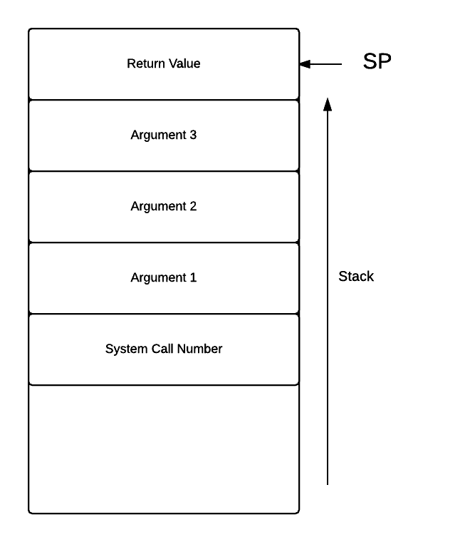

Introduction
The ExpL compiler needs to translate a given source program and generate the target machine code into an executable file in a format which is recognized by the load module of the target operating system. Thus, in order to generater the executable, the following information needs to be made available to the compiler :
- The machine instruction set of the target machine.
- The (virtual) address space model available for the target program. Conventionally, this address space is logically divided into regions like code, data, stack, heap etc.
- The format for the target file (executable format). The compiler typically passes information regarding the sizes and address regions allocated to the code, data, stack, text and heap regions to the loader by setting appropriate values in the header of the executable file.
- Interfaces for OS routines that needs to be invoked to get certain operations like input/output done. This is specified in the library interface documentation.
These specifications depend not only on the target machine architecture, but also on the operating system upon which the target machine code must execute. Typically these specifications are collected together in the OS specification into a document called the Application Binary Interface (ABI).
The following sections specify the ABI for the eXpOS operating system run on the XSM virtual machine model. The executable format is called the XEXE executable format.
The XSM virtual machine instruction set
XSM provides a set of instructions, which are the only instructions available when the machine is executing in the user mode.The instructions are Data Transfer Instructions, Arithmetic Instructions, Logical Instructions, Stack Instructions, Sub-routine instructions, Debug instructions and Software interrupts. Registers available are R0-R19, SP, BP and IP.
Data Transfer Instructions
| Addressing Type |
Syntax |
Semantics |
| Register Adressing |
MOV Ri, Rj |
Copies the contents of register Rj to Ri |
| Immediate Addressing |
MOV Ri, INTEGER/STRING |
Copies the INTEGER/STRING to the register Ri |
| Register Indirect Addressing |
MOV Ri, [Rj] |
Copy contents of memory location pointed by Rj to register Ri. |
| MOV [Ri], Rj |
Copy contents of Rj to the location whose address is in Ri |
| Direct Addressing |
MOV [LOC], Rj |
Copy contents of Rj to the memory address LOC |
| MOV Rj, [LOC] |
Copy contents of the memory location LOC to the register Rj |
| Direct Indexed Addressing |
MOV [LOC] Rj, Ri |
Copy contents of Ri to the memory address LOC + (value in Rj) |
| MOV [LOC] Index, Rj |
Copy contents of Rj to the memory address LOC + Index. Index must be an integer value |
| MOV Ri, [LOC] Rj |
Copy contents in the memory address LOC + (value in Rj) to the register Ri |
| MOV Ri, [LOC] Index |
Copy contents of the memory address LOC + Index to the register Ri. Index must be an integer value |
Arithmetic Instructions
Arithmetic Instructions perform arithmetic operations on registers containing integers. If the register contains a non-integer value, an exception (illegal instruction) is raised.
| Instruction |
Syntax |
Semantics |
| ADD, SUB, MUL, DIV and MOD |
OP Ri, Rj |
The result of Ri op Rj is stored in Ri |
| OP Ri, INTEGER |
The result of Ri op INTEGER is stored in Ri |
| INR, DCR |
OP Ri |
Increments/Decrements the value of register Ri by 1 |
For all the above instructions, Ri/Rj may be any register except IP.
Logical Instructions
Logical instructions are used for comparing values in registers. Strings can also be compared according to the lexicographic ordering of ASCII. If one of the operands is a string, the other operand will also be considered as a string. The logical instructions are LT, GT, EQ, NE, GE and LE.
| Type |
Syntax |
Semantics |
| LT, GT, EQ, NE, GE, LE |
OP Ri, Rj |
Stores 1 in Ri if the value stored in Ri is less than/greater than/equal to/not equal to/greater than or equal to/less than or equal to that in Rj. Ri is set to 0 otherwise |
Branching Instructions
Branching is achieved by changing the value of the IP to the word address of the target instruction specified by 'target_address'.
| Type |
Syntax |
Semantics |
| JZ |
JZ Ri, target_address |
Jumps to target_address if the contents of Ri is zero |
| JNZ |
JNZ Ri, target_address |
Jumps to target_address if the contents of Ri is not zero |
| JMP |
JMP target_address |
Unconditional jump to target_address |
Stack Instructions
| Type |
Syntax |
Semantics |
| PUSH |
PUSH Ri |
Increment SP by 1 and copy contents of Ri to the location pointed to by SP |
| POP |
POP Ri |
Copy contents of the location pointed to by SP into Ri and decrement SP by 1 |
For both these instructions Ri may be any register except IP.
Subroutine Instructions
The CALL instruction copies the address of the next instruction to be fetched(this value must be IP + 2 since each instruction is two memory words) on to location SP + 1. It also increments SP by one and transfers control to the instruction specified by the target_address. The RET instruction restores the IP value stored at location pointed by SP, decrements SP by one and continues execution fetching the next instruction pointed to by IP
| Type |
Syntax |
Semantics |
| CALL |
CALL target_address |
Increments SP by 1, transfers IP + 2 to location pointed to by SP and jumps to instruction specified by target_address |
| RET |
RET |
Sets IP to the value pointed to by SP and decrements SP |
The virtual address space model
The (virtual) address space of any eXpOS process is logically divided into four parts namely Library, Heap, Code and Stack.

The Library contains routines for implementing dynamic memory allocation functions Alloc(), Free() and Initialize(). The compiler must generate code to invoke the library with appropriate function identifiers to call these functions. The library also provides routines that trap into the OS for performing Read() and Write() operatins. The library code, once created, can be used by any application for the above functions. The ABI stipulates that the library code must be loaded between address 0 and 1023 of the virtual address space. Note that since each XSM instruction takes up two memory words, the library can be of size at most 512 instructions.
Heap is the portion of the address space of a process reserved as the memory pool from which dynamic memory allocation is done by the allocator routines in the library. The memory region between address 1024 and 2047 is reserved for the heap.
Code contains the header and code part of the XEXE executable file, which is loaded by the eXpOS loader from the file system when the Exec system call is executed. The first eight words of the executable file contains the header. The rest of the code region contains the XSM instructions. The total size of code section cannot exceed X_CSIZE. The eXpOS implementation for the XSM architecture discussed here sets X_CSIZE to 1024 words. Hence, the code region will be between memory addressess 2048 and 3071 in the address space of the process.
Stack is the space reserved for the runtime stack of the process. Parameters and local variables associated with functions in a program are allocated in the stack. In the XSM architecture, the stack grows upwards and the maximum stack size is X_SSIZE. Global variables must be allocated in the stack as the executable file format does not support a separate Data region. The eXpOS implementation for the XSM architecture discussed here sets X_SIZE to 1024 words.Thus the stack will occupy the region betweem memory address 3072 and 4095 in the address space of the process.
A description of the user level address space provided by XSM is given here.
The library interface
ExpL file operations and Input/Ouput operations must be mapped to the corresponding system calls of the underlying operating system. The eXpOS library comes with a set of built-in functions that provide a generic interface for invoking the OS sytem calls. The library also provides a set of functions for heap management (dynamic memory allocation and de-allocation). Thus the ExpL compiler can simply generate code to invoke these library routines to translate the corresponding high level operations.
A specification of the eXpOS library interface is given below:
The eXpOS library consists of a collection of user level routines provided as part of the operating system. These routines are loaded to the memory during OS start up and can be linked to the address space of any user process by the OS loader (exec system call). The OS loader will link these routines to the shared library region of the address space if the library flag in the header of the executable file being loaded is set to 1. The library provides a uniform system call interface through which application program can invoke system calls by providing the system call number and the arguments. The interface hides the details of the interrupt service routine corresponding to the system call from the application program, thereby making it architecture independent. The library also provides user level routines for dynamic memory management (allocation and de-allocation) from the heap region of the application.
Unified System Call Interface
This library routine is linked to virtual address 0 of the address space of a process by the OS loader and requires four arguments (system call number and three arguments to the system call) to be passed through the stack. The routine invokes the corresponding low level system call and returns to the user program the return value of the system call through the stack. The following figure shows the contents of the stack immediately after a call to this library routine.

Dynamic Memory Management Module Interface
The dynamic memory management module interface takes two inputs - a function code (0 for alloc and 1 for free - see high level library interface -- Put Link for specification) and one argument passed through the stack. The retrun value is passed back to the application through the stack. The OS loader of the present version of eXpOS for XSM architecture links this routine to virtual address 512 of the application process. The following figure shows the contents of the stack just before a call to this library routine.

XEXE executable file format
The compiler must generate target code into a file in the format specified below so that the eXpOS loader recognizes the format and load the program into memory for execution correctly. Each executable file contains a header in which the compiler adds information like the initial value to be given to the stack pointer in the virtual addres space, initial value of the instruction pointer etc, the starting (virtual) addresses and sizes of various memory regions like text, stack, heap etc.
Executable files in eXpOS must be in the XEXE format as eXpOS executes only files of such format.An XEXE executable file in eXpOS consists of two parts:

The maximum size of the file (including the header) is limited by the constant EXE_SIZE. The eXpOS implementation for the XSM architecture discussed here sets EXE_SIZE to 1024 words.
The first eight words of an executable file are reserved for the header which describes the features of file. The structure of the header is :

XMAGIC is a number indicating the type of executable file. All XEXE files will have magic number 0. For more on Magic Number, click here.
Entry point contains the virtual address in memory of the first instruction to be executed (entry point) of the program after the OS loader has loaded it. During loading, the program counter must be initialized to this address.
Text Size, Data Size, Heap Size and Stack size indicates the sizes of Text, Data, Heap and Stack regions to be allocated by the OS loader when the file is loaded for execution.
Note : The present eXpOS virtual address space model requires that the data and stack must be in the same memory area and must be managed by the compiler / application program. The value of Data Size field is ignored. Moreover, the size allocated for text and stack regions in memory are set to 1024 irrespective of the values present in the header.
If the Runtime Library must be included when the file is loaded, the Library Flag is set to 1 in the executable file. If this flag is not set then neither memory is allocated for the heap nor the library linked to the address space of the process at execution time.
In summary, the eXpOS loader maps an executable file into its virtual address according to the following table :
| Region |
Start Address |
End Address |
| Library* |
0 |
1023 |
| Heap* |
1024 |
2047 |
| Code |
2048 |
4095 |
| Stack† |
4096 |
5119 |
* If Library Flag is set to 1 in the executable header.
† The Stack Pointer is not initialised to the address 4096 by the eXpOS loader.